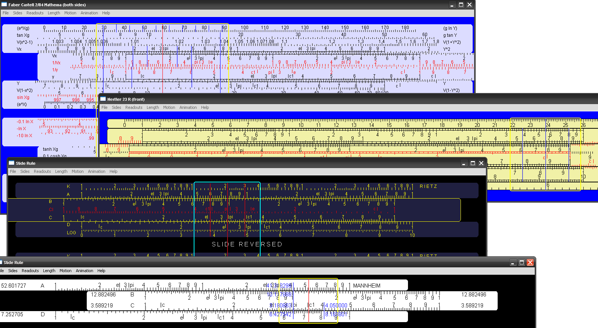

Click to join sliderule |

INTERNATIONAL SLIDE RULE MUSEUM
... an excellent source of slide rule rela related informations


- Digital read-outs (display numbers under the cursors).
- Digital entry (right-click, enter number and cursor slides automatically).
- The scales are drawn programmatically (they are not sliding pictures).
- The scales can slide by fraction of a pixel.
- Lanczos-3 anti-aliasing algorithm makes it possible to draw markings in-between pixels.
- Entirely customisable (scales, rules, colours, digital readouts, motion speed and animations).
- Variable number of slides (they can move together or free).
- Multi-platform implementation based on wxWidgets technology (Windows, OS X, Source code for Linux).
- Free licence.
- Buy Me a Beer if you like the program.
- The Slide Rule Emulator is written in C++.
- It consists of a single source file (over 5,000 lines of code).
- It needs wxWidgets library to compile. It will compile on any platform, which is supported by wxWidgets.
- The source code is available on request. Write me an email and I will send the source code back to you.
- To find my email address, click Help->About on the emulator.
- Consider making a donation, click Buy Me a Beer.
- Download 19th April 2011 version.
- Download 1st May 2012 version (latest).
- Download Version for Apple Mountain Lion OS X.
No installation necessary. Just un-zip the downloaded package. The applications for Windows, Apple OS X and Linux (Ubuntu) are inside. On Linux you may wish to re-compile the code from the source directory.
- Double click the application to start. The default (or previously loaded) side rule will appear.
- Click on the sliding rule and drag it to make it move.
- Click on the cursor (or on the stator rule) to move the cursor.
- Right-click on any hairline (or on any of the scales) to enter numeric value. The cursor will automatically move to the specified spot.
- Left-click on any hairline to enter numeric value. The sliding rule will automatically move to the specified spot under the hairline.
- Use the Readouts menu to control where the numeric values are going to appear.
- Use the File -> Load menu to load specific slide rule.
- ... or simply drag-and-drop a text file (containing slide rule definition) onto the emulator.
- On some trigonometrical scales values are given in degrees, minutes and fractions of minutes. Thus, 2.3 will mean: two degrees and thirty minutes (2.5 degree).
Slide rules often have scales on both sides (front and back). Sometime scales appear on both sides of the slide only. This slide rule emulator allows for switching between two sides. In fact, it makes it possible to have more than just two sides.
- Every file contining slide rule can have, in fact, several slide rules inside, one after another.
- You can switch between each sliderule by pressing function keys (from F1 to F12).
- The maximum number of slide rule sides is stored in the "config.txt" file. Look for the number_of_slide_rules [...] command.
- The default maximum number of slide rules is 3. First for the front, second for the back and third for both sides. The corresponding keys are F1, F2 and F3.
- You can make as many side as you like, but you have only 12 function keys. Therefore you won't be able to use more than 12 sides.
The Readouts menu determines where the numeric values appear.
- The values can appear on both sides of slides and stators.
- The values can appear on the main hairline as well.
- The values can also appear on other hairlines.
This menu allows you to customise the length of a slide rule.
Every file with slide rule may in fact specify its own length. Some of them may be shorter, others can be longer. However, if you check the "length override" option, then every slide rule will have the same length, which you specify in the menu.
If you wish to specify the length, which is not available as an option, then you can edit the "config.txt" file directly. This is highly recommended.
This menu allows you to adjust how slides and cursor respond to the mouse dragging. Slides and cursor may move slower (settings lower than 1.0), faster (settings higher than 1.0) or at the same speed (setting equal to 1.0).
Every slide rule can have its own motion multiplier. Some of them may respond with high resistance, some others may move much faster. In fact, every single slide on a multi-slide slide rule can have its own multiplier as well. However, if you check the "motion override" option, then every slide on every slide rule will slide at the same speed.
If you wish to specify motion multiplier, which is not available as an option, then you can edit the "config.txt" file directly. This is highly recommended.
- You can switch the animation ON or OFF.
- You can change the number of animation steps.
- You can change the delay between animation steps.
- You can choose LINEAR animation. By default, slides and cursor accelerate and decelerate. In linear mode, the motion is continuous.
- You can also choose VARIABLE SPEED option. By default slides and cursor move at roughly the same speed. It means that it take longer to go over greater distance. Variable speed option allows slides and cursor to preserve the amount of time necessary for different distances.
- Every slide rule may have its own animation settings. However, if you check the "animation override" option, then your choices will take precedence.
- If you wish to specify animation steps and/or delay frames, which are not available as an option, then you can edit the "config.txt" file directly. This is highly recommended.
- The "config.txt" file can be edited manually.
- You can adjust numeric values, such as length, motion speed, animation steps and animation frames.
- number_of_slide_rules [ number ] specifies the maximum number of sides of a slide rule. Default value is 3. Practical maximum value is 12 as there are only 12 function keys available (for switching between sides).
- no_automatic_save [] will prevent Slide Rule Emulator from overwriting it. The changes, which you will make using menus will not be permanent.
- I_made_my_donation [] will suppress donation reminder.
Every slide rule is stored in each separate text file. You can create your own text files containing your own arrangements of scales, colours, sizes, hairlines and so on. Text files with slide rules contain simple commands. Perhaps the best idea is to start with an existing slide rule, modify it slightly and save. Of course, you can build your slide rule starting with an empty file. Read through the list of commands and list of scales (below).
Below is the list of all commands, which you can use to create your own slide rule:
- name [ "text" ]: name of the slide rule, which appears as the window title.
- length [ number ]: specified the length of your slide rule in pixels.
- margin [ fraction ]: specifies the relative (to the scale length) width of the empty spaces on the left and right sides of the slide rule. The default value is 0.2.
- cursor_width [ fraction ]: specifies the relative (to the scale length) width of the cursor. The default value is 0.2.
- metric [ number ]: specifies the length of your slide rule in millimetres.
- corner [ number ]: the radius of the rounded corner of the rules (in pixels).
- spacer [ number ]: creates a vertical gap between scales of the specified height (in pixels)
- channel []: creates a channel (or well) below the last declared rule.
- channel [ n ]: creates a channel (or well) below the n-th last declared rule.
- stator []: creates a static non-moving rule. You can put scales and/or spacers on it by writing necessary commands immediately after.
- empty_space []: creates a stator without any visible rule. You can put scales and/or spacers on it by writing necessary commands immediately after. If you intend to put just an empty space the it must be followed by a spacer [ size ].
- slide []: creates a movable rule. You can put scales and/or spacers on it by writing necessary commands immediately after. You can have as many slides on your slide rule as you wish. All of them move together.
- nesting_level [ level ]: sets the level of nesting of paired free slides, which moves together.
- free_slide []: same as slide [] but your free slides are not connected together. You can move them separately.
- free_slide [ number ]: similar to the above but the free slide with the same number move together. The number must be greater than zero to take effect.
- rule_colour [ red green blue ]: specified the background colour of your rules (stators, slides and free slides).
- marker_colour [ red green blue ]: specifies the colour of your markings on the scales.
- hairline_colour [ red green blue ]: specifies the colour of your main hairline and reversed scales (i.e. CI, DI, CIF, DIF).
- multi_hairline_colour [ red green blue ]: specifies the colour of other hairlines on your cursor.
- background_colour [ red green blue ]: specifies the colour of the background and empty spaces.
- background_marker_colour [red green blue ]: specifies the colour of the markers on empty spaces.
- cursor_colour [ red green blue ]: specifies the colour of the cursor's window and cursor's frame.
- cursor_transparency [ alpha ]: specifies the transparency of the cursor's window (0 = transparent .. 255 = opaque). Currently it works on OS X only.
- no_borderline []: suppresses drawing borderline around a rule.
- borderline []: draws borderline around a rule (default option). You need to use it if you wish to have some rules with borderline and some other without.
- motion [ fraction ]: specifies the motion multiplier for a rule. Each rule can have its own motion multiplier. Cursor moves with the motion multiplier of a rule, which you click over (when dragging).
- location [ x y ]: specifies the top left corner of your slide rule within the window.
- animation_steps [ steps ]: specifies the number of steps for animation.
- animation_delays [ delays ]: specifies the number of milliseconds between animation steps.
- animation_linear []: makes the animation movements linear.
- animation_variable_speed []: animation takes exactly the same time to move across different distances.
- hairline_s []: first appearance specifies the beginning of the S hairline, while second specifies its end.
- hairline_d []: first appearance specifies the beginning of the D hairline, while second specifies its end.
- hairline_360 []: first appearance specifies the beginning of the 360 hairline, while second specifies its end. The location is specific to scale C folded at PI.
- hairline_36010 []: first appearance specifies the beginning of the 36010 hairline, while second specifies its end. the location is specific to scale C folded at sqrt (10.0).
- hairline_360st []: same as hairline_360, but positioned on the left side of the main hairline. Usefull for ST scale.
- hairline_kw []: first appearance specifies the beginning of the kW hairline, while second specifies its end.
- hairline_hp []: first appearance specifies the beginning of the HP hairline, while second specifies its end.
- mechanical_hp []: causes the HP and kW hairlines to be drawn at 0.7459...
- metric_hp []: causes the HP and kW hairlines to be drawn at 0.7354... You can specify both to have both hairlines on your cursor.
- extra_hairlines [ number ]: specifies how many extra hairlines are present.
- hairline [ number location ]: specifies horizontal shift from the main hairline. It is used for the first appearance of the hairline identified by the number.
- hairline [ number ]: specifies the end of the hairline identified by number. This is the second appearance form.
- rule_visible_margins [ left_fraction right_fraction ]: very good in situation where rules are of non-equal length. Allows to make visible margins shorter.
- left_description [ "text" x ]: draws scale description shifted x pixels to the left from the scale. If x is a fractional number (with decimal point) then the shift will be fraction of the entire scale length.
- left_description [ x "text" ]: same as above but right-justified.
- right_description [ "text" x ]: draws scale description shifted x pixels to the right from the scale. If x is a fractional number (with decimal point) then the shift will be fraction of the entire scale length.
- right_description [ x "text" ]: same as above but right-justified.
- middle_description [ "text" ]: draws the specified text in the middle of the scale. Useful for spacers (mostly).
- highlight [ red gree blue ]: specifies the highlight colour for a scale. It is necessary to precisely control the left and right end of the highlight (described below) as the scale may cause some anti-aliasing artifacts to appear.
- highlight_extensions [ left right ]: specifies the left and right extent of the highlight. Default value is 0.0.
- highlight_left [ fraction ]: specifies the left extent of the highlight. Default value is 0.0.
- highlight_right [ fraction ]: specifies the right extent of the highlight. Default value is 0.0.
- scale_marker_colour [ red green blue ]: changes the colour of the markers for particular scale.
- scale_reverse_marker_colour [ red green blue ]: changes the alternative colour of the markers for particular scale (typically used for reversed scales).
- no_pi []: prevents the slide rule from showing the PI = 3.1415... marker.
- no_e []: prevents the slide rule from showing the E = 2.7182... marker.
- no_c []: prevents the slide rule from showing the C = 1.1283... marker.
- no_c1 []: prevents the slide rule from showing the C1 = 3.5682... marker.
- no_degree []: prevents the slide rule from showing the q = 0.01745... marker.
- no_m []: prevents the slide rule from showing the M = 31,8310... marker (on A, B, AI and BI scales).
- no_mm []: prevents the slide rule from showing the 78,5398... marker (on A, B, AI and BI scales).
- draw_pi []: causes the slide rule to show the PI = 3.1415... marker (if it was previously switched-off).
- draw_e []: causes the slide rule to show the E = 2.7182... marker (if it was previously switched-off).
- draw_c []: causes the slide rule to show the C = 1.1283... marker (if it was previously switched-off).
- draw_c1 []: causes the slide rule to show the C1 = 3.5682... marker (if it was previously switched-off).
- draw_degree []: causes the slide rule to show the q = 0.01745... marker (if it was previously switched-off).
- draw_m []: causes the slide rule to show the M = 31,8310... marker (on A, B, AI and BI scales).
- draw_mm []: causes the slide rule to show the 78,5398... marker (on A, B, AI and BI scales).
- marker_height [ index fraction ]: adjusts the height of markers on the scales. The default heights are: [0 0.5] [1 0.4] [2 0.3] [3 0.2] [4 1.0].
- horizontal_line [ index ]: turns-on drawing of the horizontal lines on scales at the height of the specified marker (as specified above).
- no_horizontal_line [ indedx ]: turns-off drawing of the horizontal lines on scales at the height of the specified marker.
- horizontal_extensions [ left right ]: the left and right extent of horizontal lines.
- scale_extensions [ left_fraction right_fraction ]: causes scales to spill over the left and right index by specified amount relative to the scale length. Default values are 0.0. Practical values are usually no higher than 0.1.
Below is the list of all available scales, which you can use to create your own slide rule:
- scale_A [ height ]: draws the A scale (x ^ 2).
- scale_B [ height ]: draws the B scale (x ^ 2).
- scale_C [ height ]: draws the C scale (x).
- scale_D [ height ]: draws the D scale (x).
- scale_K [ height ]: draws the K scale (x ^ 3).
- scale_J [ height ]: same as K scale but upside down.
- scale_F [ height ]: draws the F scale (x ^ 4).
- scale_G [ height ]: same as F scale but upside down.
- scale_AI [ height ]: reversed A scale (1 / x ^ 2).
- scale_BI [ height ]: reversed B scale (1 / x ^ 2).
- scale_CI [ height ]: reversed C scale (1 / x).
- scale_DI [ height ]: reversed D scale (1 / x).
- scale_KI [ height ]: reversed K scale (1 / x ^ 3).
- scale_JI [ height ]: reversed J scale (1 / x ^ 3).
- scale_FI [ height ]: reversed F scale (1 / x ^ 4).
- scale_GI [ height ]: reversed G scale (1 / x ^ 4).
- scale_CF [ height ]: folded C scale (x * PI).
- scale_DF [ height ]: folded D scale (x * PI).
- scale_CIF [ height ]: reversed then folded C scale (PI / x).
- scale_DIF [ height ]: reversed then folded D scale (PI / x).
- scale_CFI [ height ]: folded then reversed C scale (1 / (x * PI)).
- scale_DFI [ height ]: folded then reversed D scale (1 / (x * PI)).
- scale_CF10 [ height ]: folded C scale (x * sqrt (10.0)).
- scale_DF10 [ height ]: folded D scale (x * sqrt (10.0)).
- scale_CIF10 [ height ]: reversed and folded C scale (sqrt (10.0) / x).
- scale_DIF10 [ height ]: reversed and folded D scale (sqrt (10.0) / x).
- scale_CF36 [ height ]: folded C scale (x * 3.6).
- scale_DF36 [ height ]: folded D scale (x * 3.6).
- scale_CIF36 [ height ]: reversed and folded C scale (3.6 / x).
- scale_DIF36 [ height ]: reversed and folded D scale (3.6 / x).
- scale_CFM [ height ]: folded C scale (x / log (e)).
- scale_DFM [ height ]: folded D scale (x / log (e)).
- scale_CIFM [ height ]: reversed and folded C scale (log (e) * x).
- scale_DIFM [ height ]: reversed and folded D scale (log (e) * x).
- scale_CF1M [ height ]: folded C scale (x * log (e)).
- scale_DF1M [ height ]: folded D scale (x * log (e)).
- scale_CIF1M [ height ]: reversed and folded C scale (log (e) / x).
- scale_DIF1M [ height ]: reversed and folded D scale (log (e) / x).
- scale_R1 [ height ]: scale R1 (x ^ 0.5).
- scale_R2 [ height ]: scale R2 (10.0 ^ 0.5 + x ^ 0.5).
- scale_W1 [ height ]: scale W1 or R1 upside down (x ^ 0.5).
- scale_W2 [ height ]: scale W2 or R2 upside down (10.0 ^ 0.5 + x ^ 0.5).
- scale_3R1 [ height ]: scale R1 (x ^ 0.333...).
- scale_3R2 [ height ]: scale R2 (10.0 ^ 0.333... + x ^ 0.333...).
- scale_3R3 [ height ]: scale R3 (2.0 * 10.0 ^ 0.333... + x ^ 0.333...).
- scale_3W1 [ height ]: scale W1 or R1 upside down (x ^ 0.333...).
- scale_3W2 [ height ]: scale W2 or R2 upside down (10.0 ^ 0.333... + x ^ 0.333...).
- scale_3W3 [ height ]: scale W3 or R3 upside down (2.0 * 10.0 ^ 0.333... + x ^ 0.333...).
- scale_3R1 [ height scale shift ]: scale R1 (x ^ (x + shift) / scale) left side.
- scale_3R2 [ height scale shift ]: scale R2 (x ^ (x + shift) / scale) middle part.
- scale_3R3 [ height scale shift ]: scale R3 (x ^ (x + shift) / scale) right side.
- scale_3W1 [ height scale shift ]: scale W1 or R1 upside down (x ^ (x + shift) / scale) left side.
- scale_3W2 [ height scale shift ]: scale W2 or R2 upside down (x ^ (x + shift) / scale) middle part.
- scale_3W3 [ height scale shift ]: scale W3 or R3 upside down (x ^ (x + shift) / scale) right side.
- scale_Cdk [ height ]: decimal tracking scale (range -5 .. +5).
- scale_Ddk [ height ]: same as above but upside down.
- scale_Adk [ height ]: decimal tracking scale (range -10 .. +10).
- scale_Bdk [ height ]: same as above but upside down.
- scale_Kdk [ height ]: decimal tracking scale (range -15 .. +15).
- scale_Jdk [ height ]: same as above but upside down.
- scale_CK [ range height ]: decimal tracking scale (range -range .. +range).
- scale_DK [ range height ]: same as above but upside down.
- scale_SCK [ range height ]: decimal tracking sine scale (range -range .. +range) marked in degrees and minutes.
- scale_SDK [ range height ]: same as above but upside down.
- scale_SCKdec [ range height ]: decimal tracking sine scale (range -range .. +range) marked in degrees and thenths of a degree.
- scale_SDKdec [ range height ]: same as above but uspide down.
- scale_TCK [ range height ]: decimal tracking tangent scale (range -range .. +range) marked in degrees and minutes.
- scale_TDK [ range height ]: same as above but upside down.
- scale_TCKdec [ range height ]: decimal tracking tangent scale (range -range .. +range) marked in degrees and thenths of a degree.
- scale_TDKdec [ range height ]: same as above but uspide down.
- scale_L [ height ]: Logarithmic scale (log10 (x)).
- scale_L_down [height ]: same as above but upside down.
- scale_Ln [ height ]: Logarithmic scale (ln (x)).
- scale_Ln_down [height ]: same as above but upside down.
- scale_LR1 [ height ]: lower half of the L scale (log10 (x) * 0.5).
- scale_LR2 [ height ]: upper half of the L scale (0.5 + log10 (x) * 0.5).
- scale_LR12 [ height ]: both halves of the L scale.
- scale_LW1 [ height ]: same as LR1 but upside down (log10 (x) * 0.5).
- scale_LW2 [ height ]: same as LR2 but upside down (0.5 + log10 (x) * 0.5).
- scale_LW12 [ height ]: same as LR12 but upside down.
- scale_metric [ height ]: centimetres and millimetres.
- scale_metric_down [ height ]: same as above but upside down.
- scale_metric [ height begin_point ]: centimetres and millimetres started at the begin point.
- scale_metric_down [ height begin_point ]: same as above but upside down.
- scale_metric_1_25 [ height ]: centimetres and millimetres in 1/25 scale.
- scale_metric_down_1_25 [ height ]: same as above but upside down.
- scale_metric_1_50 [ height ]: centimetres and millimetres in 1/5 scale.
- scale_metric_down_50 [ height ]: same as above but upside down.
- scale_imperial [ height ]: inches.
- scale_imperial_down [ height ]: same as above but upside down.
- scale_S [ height ]: sine scale (sin (x)) marked in degrees and minutes for range 5 deg 40 mins to 90 deg.
- scale_S_down [ height ]: same as above but upside down.
- scale_S1 [ height ]: sine scale (sin (x)) marked in degrees and minutes for range 35 mins to 5 deg 40 mins.
- scale_S1_down [ height ]: same as above but upside down.
- scale_SA [ height ]: sine scale aligned with A scale (sin (x)) marked in degrees and minutes.
- scale_SB [ height ] or scale_SA_down [ height ]: same as above but upside down.
- scale_T [ height ]: tangent scale (tan (x)) marked in degrees and minutes for range 5 deg 40 mins to 45 deg.
- scale_T_down [ height ]: same as above but upside down.
- scale_T1 [ height ]: tangent scale (tan (x)) marked in degrees and minutes for range 35 mins to 5 deg 40 mins.
- scale_T1_down [ height ]: same as above but upside down.
- scale_TA [ height ]: tangent scale aligned with A scale (tan (x)) marked in degrees and minutes.
- scale_TB [ height ]: same as above but upside down.
- scale_T2 [ height ]: tangent scale (tan (x)) for angles 45 degrees and above, marekd in degrees and minutes.
- scale_T2_down [ height ]: same as above but upside down.
- scale_ST [ height ]: sine and tangent scale for angles below 6 degrees, marked in degrees and minutes (less accurate than S1/T1).
- scale_ST_down [ height ]: same as above but upside down (less accurate than S1_down/T1_down).
- scale_Sdec [ height ]: sine scale (sin (x)) marked in degrees and tenths of a degree for range 5.7 to 90 deg.
- scale_Sdec_down [ height ]: same as above but upside down.
- scale_S1dec [ height ]: sine scale (sin (x)) marked in degrees and tenths of a degree for range .57 to 5.7 deg.
- scale_S1dec_down [ height ]: same as above but upside down.
- scale_SAdec [ height ]: sine scale aligned with A scale (sin (x)) marked in degrees and tenths of a degree.
- scale_SBdec [ height ] or scale_SAdec_down [ height ]: same as above but upside down.
- scale_Tdec [ height ]: tangent scale (tan (x)) marked in degrees and tenths of a degree for range 5.7 to 45 deg.
- scale_Tdec_down [ height ]: same as above but upside down.
- scale_T1dec [ height ]: tangent scale (tan (x)) marked in degrees and tenths of a degree for range .57 to 5.7 deg.
- scale_T1dec_down [ height ]: same as above but upside down.
- scale_TAdec [ height ]: tangent scale aligned with A scale (tan (x)) marked in degrees and tenths of a degree.
- scale_TBdec [ height ]: same as above but upside down.
- scale_T2dec [ height ]: tangent scale (tan (x)) for angles 45 degrees and above, marked in degrees and tenths of a degree.
- scale_T2dec_down [ height ]: same as above but upside down.
- scale_STdec [ height ]: sine and tangent scale for angles below 6 degrees, marked in degrees and tenths of a degree.
- scale_STdec_down [ height ]: same as above but upside down.
- scale_Sg [ height ]: sine scale marked in grads.
- scale_Sg_down [ height ]: same as above but upside down.
- scale_Tg [ height ]: tangent scale marked in grads.
- scale_Tg_down [ height ]: same as above but upside down.
- scale_Sr [ height ]: sine scale marked in radians.
- scale_Sr_down [ height ]: same as above but upside down.
- scale_Tr [ height ]: tangent scale marked in radians.
- scale_Tr_down [ height ]: same as above but upside down.
- scale_T2r [ height ]: tangent scale marked in radians for angles 45 degrees and above.
- scale_T2r_down [ height ]: same as above but upside down.
- scale_ISTd [ height ]: scale ISTd. This scale is composed from 4 sections. The input values are divided into 4 ranges: 0.0 .. 1.0, 0.0 .. -1.999, -2.0 .. -90.0 and 2.0 .. 90.0 The cursor will slide to the section indicated by the range. The read-outs do not provide output value for this scale.
- scale_ISTd_down [ height]: same as above but upside down.
- scale_P [ height ]: pythagorean scale (sqrt (1.0 - x ^ 2)) for range from .995 to 0.
- scale_P_down [ height ]: same as above but upside down.
- scale_P2 [ height ]: pythagorean scale (sqrt (1.0 - x ^ 2)) for range from .99995 to .995.
- scale_P2_down [ height ]: same as above but upside down.
- scale_PH [ height ]: pythagorean scale (sqrt (x ^ 2 + 1.0) for range from 1.005 to 1.5).
- scale_PH_down [ height ]: same as above but upside down.
- scale_PH2 [ height ]: pythagorean scale (sqrt (x ^ 2 + 1.0) for range from 1.4 to 10.0).
- scale_PH2_down [ height ]: same as above but upside down.
- scale_PT [ height ]: pythagorean scale (sqrt (x ^ 2 - 1.0)).
- scale_PT_down [ height ]: same as above but upside down.
- scale_LL [ height ]: log-log scale (ln (x)) aligned with K scale for range from 1.01 to 10000.
- scale_LL_down [ height ]: same as above but upside down.
- scale_LLR [ height ]: log-log scale (ln (x)) aligned with K scale for range from 0.99 to 0.0001.
- scale_LLR_down [ height ]: same as above but upside down.
- scale_LL0 [ height ]: log-log scale (ln (x)) for range from 1.001 to 1.01.
- scale_LL0_down [ height ]: same as above but upside down.
- scale_LL1 [ height ]: log-log scale (ln (x)) for range from 1.01 to 1.1.
- scale_LL1_down [ height ]: same as above but upside down.
- scale_LL2 [ height ]: log-log scale (ln (x)) for range from 1.1 to 3.0.
- scale_LL2_down [ height ]: same as above but upside down.
- scale_LL3 [ height ]: log-log scale (ln (x)) for range from 2.5 to 10,000.
- scale_LL3_down [ height ]: same as above but upside down.
- scale_LL00 [ height ]: log-log scale (ln (x)) for range from 0.999 to 0.99.
- scale_LL00_down [ height ]: same as above but upside down.
- scale_LL01 [ height ]: log-log scale (ln (x)) for range from 0.99 to 0.9.
- scale_LL01_down [ height ]: same as above but upside down.
- scale_LL02 [ height ]: log-log scale (ln (x)) for range from 0.9 to 0.35.
- scale_LL02_down [ height ]: same as above but upside down.
- scale_LL03 [ height ]: log-log scale (ln (x)) for range from 0.4 to 0.0001.
- scale_LL03_down [ height ]: same as above but upside down.
- scale_LLD0 [ height ]: log-log scale (log (x)) for range from 1.0003 to 1.003.
- scale_LLD0_down [ height ]: same as above but upside down.
- scale_LLD1 [ height ]: log-log scale (log (x)) for range from 1.003 to 1.03.
- scale_LLD1_down [ height ]: same as above but upside down.
- scale_LLD2 [ height ]: log-log scale (log (x)) for range from 1.03 to 1.26.
- scale_LLD2_down [ height ]: same as above but upside down.
- scale_LLD3 [ height ]: log-log scale (log (x)) for range from 1.26 to 10.0
- scale_LLD3_down [ height ]: same as above but upside down.
- scale_LLD4 [ height ]: log-log scale (log (x)) for range from 10.0 to 10,000,000,000.
- scale_LLD4_down [ height ]: same as above but upside down.
- scale_LLD00 [ height ]: log-log scale (log (x)) for range from 0.99977 to 0.9977.
- scale_LLD00_down [ height ]: same as above but upside down.
- scale_LLD01 [ height ]: log-log scale (log (x)) for range from 0.9977 to 0.977.
- scale_LLD01_down [ height ]: same as above but upside down.
- scale_LLD02 [ height ]: log-log scale (log (x)) for range from 0.977 to 0.76.
- scale_LLD02_down [ height ]: same as above but upside down.
- scale_LLD03 [ height ]: log-log scale (log (x)) for range from 0.76 to 0.1.
- scale_LLD03_down [ height ]: same as above but upside down.
- scale_LLD04 [ height ]: log-log scale (log (x)) for range from 0.1 to 0.0000000001.
- scale_LLD04_down [ height ]: same as above but upside down.
- scale_SINH1 [ height ]: lower part of the hyperbolic sine.
- scale_SINH1_down [ height ]: same as above but upside down.
- scale_SINH2 [ height ]: upper part of the hyperbolic sine.
- scale_SINH2_down [ height ]: same as above but upside down.
- scale_COSH [ height ]: hyperbolic cosine.
- scale_COSH_down [ height ]: same as above but upside down.
- scale_TANH [ height ]: hyperbolic tangent.
- scale_TANH_down [ height ]: same as above but upside down.
- scale_SINH1g [ height ]: lower part of the hyperbolic sine expressed in grads.
- scale_SINH1g_down [ height ]: same as above but upside down.
- scale_SINH2g [ height ]: upper part of the hyperbolic sine expressed in grads.
- scale_SINH2g_down [ height ]: same as above but upside down.
- scale_COSHg [ height ]: hyperbolic cosine expressed in grads.
- scale_COSHg_down [ height ]: same as above but upside down.
- scale_TANHg [ height ]: hyperbolic tangent expressed in grads.
- scale_TANHg_down [ height ]: same as above but upside down.
- scale_SINH1d [ height ]: lower part of the hyperbolic sine marked in degrees and minutes.
- scale_SINH1d_down [ height ]: same as above but upside down.
- scale_SINH2d [ height ]: upper part of the hyperbolic sine expressed in degrees and minutes.
- scale_SINH2d_down [ height ]: same as above but upside down.
- scale_COSHd [ height ]: hyperbolic cosine expressed in degrees and minutes.
- scale_COSHd_down [ height ]: same as above but upside down.
- scale_TANHd [ height ]: hyperbolic tangent expressed in degrees and minutes.
- scale_TANHd_down [ height ]: same as above but upside down.
- scale_SINH1dec [ height ]: lower part of the hyperbolic sine marked in degrees and tenths of a degree.
- scale_SINH1dec_down [ height ]: same as above but upside down.
- scale_SINH2dec [ height ]: upper part of the hyperbolic sine expressed in degrees and tenths of a degree.
- scale_SINH2dec_down [ height ]: same as above but upside down.
- scale_COSHdec [ height ]: hyperbolic cosine expressed in degrees and tenths of a degree.
- scale_COSHdec_down [ height ]: same as above but upside down.
- scale_TANHdec [ height ]: hyperbolic tangent expressed in degrees and tenths of a degree.
- scale_TANHdec_down [ height ]: same as above but upside down.
- scale_SQRT [ height ]: square root scale.
- scale_SQRT_down [ height ]: same as above but upside down.
- scale_SQRT2 [ height ]: square root scale for range 10.0 and above.
- scale_SQRT2_down [ height ]: same as above but upside down.
- scale_SQRT_S [ height ]: sine scale alligned with square root scale (in degrees and minutes).
- scale_SQRT_S_down [ height ]: same as above but upside down.
- scale_SQRT_Sdec [ height ]: sine scale alligned with square root scale (in degrees and tenths of a degree).
- scale_SQRT_Sdec_down [ height ]: same as above but upside down.
- scale_SQRT_Sr [ height ]: sine scale alligned with square root scale (in radians).
- scale_SQRT_Sr_down [ height ]: same as above but upside down.
- scale_OCT [ octaves height ]: musical scale for calculating harmonics.
- scale_OCT_down [ octaves height ]: same as above but upside down.
Please, proceed directly to the section how to remove the donation reminder. The sliderule emulator is now completely free for use.
Click to join sliderule
INTERNATIONAL SLIDE RULE MUSEUM
... an excellent source of slide rule rela related informations
- Please, Buy Me a Beer first.
- Then contact me, state your wish or request and I will see what I can do.
- You can find my email from Help->About menu on the Slide Rule Emulator.
config [
- Please, Buy Me a Beer first.
- You can hack and re-compile the code, of course, but there is a better way.
- Find the "config.txt" file. The Slide Rule Emulator creates this file automatically in its main folder.
- Edit the "config.txt" file with a simple text editor. Notepad or gedit will do perfectly well.
- Insert an extra line somewhere in the middle. The line should be as follows: "I_made_my_donation []".
- Save and close.
- Check an example below.
...
...
readouts_on_stator_left []
readouts_on_slide_left []
readouts_on_multi_hairlines []
length [900]
last_loaded ["/home/rama/sliderule.app/regle_des_ecoles.txt"]
d_config [19]
I_made_my_donation []
]
- The easiest way to find the address is to click the Help->About menu in the Slide Rule Emulator.
- You may actually figure-out for yourself how to write to me. My name Robert Wolf. Put the dot in-between name and surname. The domain is the same as this page (look into the address bar), without the "sliderule" part.
- Due to the high number of spam, which I receive daily, please use the methods described previously.